1 기후변화의 과학적 기초
들어가며: 기후변화는 이미 우리 일상 속에 있다
지구온난화가 홈런을 늘린다?
2023년 4월 미국 공영라디오 NPR은 “지구온난화가 메이저리그 홈런을 부풀리고 있는지도 모른다”는 흥미로운 기사를 내보냈다. 다트머스대학의 캘러핸(Callahan)과 맨킨(Mankin) 연구팀이 미국기상학회지(Bulletin of the American Meteorological Society)에 발표한 연구를 소개한 기사였다. 연구팀은 10만 건이 넘는 경기와 22만 개의 타구 데이터를 분석했다.
원리는 간단하다. 더운 공기는 분자가 활발하게 움직이면서 서로 멀어지기 때문에 밀도가 낮다. 밀도가 낮은 공기를 뚫고 날아가는 공은 저항을 덜 받으므로, 같은 힘으로 쳐도 더 멀리 날아간다. 연구팀의 계산에 따르면 경기 당일 최고기온이 1°C 오를 때 홈런이 약 1.96% 늘어나며, 2010년 이후 친 홈런 가운데 500개 이상이 이 효과로 설명된다. 지금의 온난화 추세가 이어진다면 2050년에는 매 시즌 약 192개, 2100년에는 약 467개의 홈런이 더위 때문에 추가로 나올 것으로 전망했다.
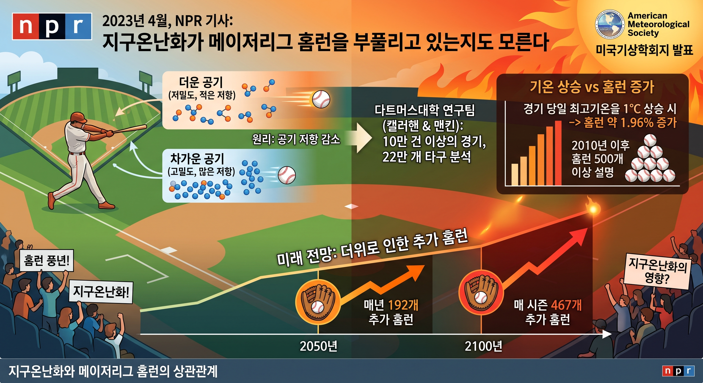
홈런 몇 개가 늘어나는 것은 사소해 보인다. 그러나 이 사례는 기후변화가 북극곰이나 먼 미래의 이야기가 아니라, 우리가 매일 보는 경기 결과에까지 측정 가능한 흔적을 남기고 있다는 점을 보여준다. 이 책 전체에서 반복되는 질문도 바로 이것이다. 기후라는 물리적 조건이 바뀌면 사람들의 행동과 경제적 결과는 어떻게 바뀌는가?
이미 140년 전에 알고 있었다
1912년 뉴질랜드의 한 소도시 신문에는 “석탄 소비와 기후 - 수백 년 안에 심각한 영향이 올 것”이라는 짧은 기사가 실렸다. 이 기사가 백 년 넘게 지나 소셜미디어에서 뒤늦게 화제가 되면서, 화석연료가 기후를 바꿀 수 있다는 경고가 아주 오래전부터 있었다는 사실이 새삼 알려졌다. 경제 매체 Quartz의 조사에 따르면 가장 이른 사례는 1882년 12월 Nature에 실린 필립스(H. A. Phillips)의 글 “대기 오염(Pollution of the Atmosphere)”이다. 필립스는 석탄 사용의 부산물이 대기의 열 흡수를 높여 “세계 기후에 뚜렷한 영향을 미칠 것”이라고 주장했다. 몇몇 과학적 세부 사항은 틀렸지만 결론은 옳았다.
우리는 140년 넘게 이 사실을 어렴풋이 알면서도 지금에 이르렀다. 왜 알면서도 행동하지 못했는가? 이 질문에 대한 답의 상당 부분은 자연과학이 아니라 경제학에 있다. 배출하는 사람과 피해를 입는 사람이 다르고(외부효과, 4장), 감축의 편익을 모두가 나누어 가지며(공공재, 4장), 비용은 지금 들고 편익은 먼 미래에 온다(할인, 7장). 이 장에서는 먼저 기후변화의 과학적 기초를 정리하고, 마지막 절에서 이것이 왜 경제학의 문제인지 연결한다.
날씨의 실현값과 기후의 확률분포
날씨와 기후의 구분
기후변화를 이해하는 첫걸음은 날씨(weather)와 기후(climate)를 엄격히 구분하는 것이다. 통계학적으로 이는 ’확률변수(random variable)의 실현값(realization)’과 ’그 확률변수가 따르는 확률분포(probability distribution)’의 차이에 정확히 대응한다.
확률변수란 무작위 실험(random experiment)의 결과 하나하나에 숫자를 대응시키는 함수다. 동전을 던져 앞면이면 1, 뒷면이면 0을 대응시키듯이, 특정 날짜·장소의 대기 상태에 ’기온’이라는 숫자를 대응시킨 것이 바로 기온이라는 확률변수다.
- 날씨는 이 확률변수가 오늘 실제로 취한 단일 실현값이다. “오늘 서울의 기온이 30°C인가?”, “내일 비가 오는가?” 같은 질문이 날씨에 해당한다.
- 기후는 장기간(통상 30년 이상)에 걸쳐 이 확률변수가 반복적으로 실현되며 그려내는 통계적 요약, 즉 기온·강수량·습도 등 기상 변수들이 따르는 확률분포 그 자체다 (Wichman 2024년).
확률분포란 확률변수가 취할 수 있는 값들 각각에 - 또는 어떤 값의 구간에 - 얼마의 확률이 배분되는지를 나타내는 함수다. 어떤 값 근처에 관측치가 몰리기 쉬운지, 어디까지 흩어질 수 있는지를 통째로 요약해 보여준다. 흔히 쓰는 말로 바꾸면, “기후는 우리가 기대하는 것이고 날씨는 우리가 실제로 겪는 것”이다.
왜 하나의 실현값으로 반박할 수 없는가
이 구분이 중요한 이유는 하나의 실현값으로 그 배후의 확률분포 전체를 반박할 수 없기 때문이다. 동전을 한 번 던져 앞면이 나왔다고 해서 그 동전이 앞면만 나오는 동전이라고 결론지을 수 없다.
마찬가지로 “올겨울이 유난히 추운데 지구온난화가 맞느냐”는 질문은 표본크기 1에 불과한 단일 관측값으로 수십 년간 누적된 분포를 부정하는 논리적 오류다. 이것은 사실관계를 다투는 문제가 아니라 실현값과 분포를 혼동한 범주의 오류(category error)다. 거꾸로 “올여름이 기록적으로 더웠으니 기후변화가 증명되었다”는 주장도 같은 이유로 조심해야 한다. 한 해의 더위가 아니라 여러 해에 걸친 분포의 체계적 이동이 증거다.
기후: 결합확률분포로서의 이해
기후를 온전히 이해하려면 평균 기온이라는 숫자 하나만 봐서는 안 된다. 한 사람의 건강을 체중 하나로 판단할 수 없는 것과 마찬가지다. 키, 혈압, 콜레스테롤 수치가 서로 얽혀 있어야 비로소 온전한 그림이 나오듯, 기후 역시 기온·강수량·습도·바람 같은 여러 변수가 동시에 어떤 조합으로 나타나는지를 함께 봐야 한다.
이렇게 여러 확률변수가 동시에 어떤 값을 취할지를 나타내는 것이 결합확률분포(joint probability distribution)이며, 그중 기온 하나만 따로 떼어 살펴본 분포를 주변분포(marginal distribution)라 부른다. 평균 기온이라는 숫자는 이 결합분포에서 다른 모든 정보를 지우고 기온이라는 한 단면만 남긴 요약본에 지나지 않는다.
결합분포가 중요한 이유: 공분산과 위험
결합분포가 중요한 이유는 변수들이 따로따로 움직이지 않고 함께 움직이기 때문이다. 폭염과 가뭄은 서로 무관하게 각자 발생하는 별개의 사건이 아니라, ’뜨겁고 건조한 날씨’라는 하나의 패턴 속에서 함께 찾아오는 경우가 많다. 두 변수가 같은 방향으로 함께 움직이는 경향을 공분산(covariance)으로 나타낸다.
농부의 입장에서 생각해 보자.
- 공분산이 낮을 때: ’더운 여름’과 ’가문 여름’이 각각 따로따로 찾아온다. 더운 해에는 비라도 충분하고, 가문 해에는 기온이라도 견딜 만하다.
- 공분산이 높을 때: 최악의 조합 - 뜨겁고 동시에 건조한 여름 - 이 훨씬 자주 실현된다. 작물은 더위와 물 부족이라는 두 스트레스를 동시에 받는다.
기온의 평균과 강수량의 평균이 그대로여도, 둘이 함께 움직이는 방식이 바뀌면 농부가 직면하는 위험은 완전히 달라진다. 기후가 대기뿐 아니라 해양, 빙권(얼음), 지표 생물권까지 아우르는 복합 시스템이라는 것도 같은 맥락이다. 이 하위 시스템들이 서로 얽혀 함께 움직이는 방식 자체가 결합분포의 일부를 이룬다.
분포의 형태: 평균, 분산, 왜도, 꼬리위험
분포의 생김새 자체도 중요한 정보를 담고 있다. 확률분포를 요약하는 대표적인 통계량을 정리해 보자.
| 통계량 | 의미 | 기후에서의 예 |
|---|---|---|
| 평균(mean) | 분포의 무게중심 | 30년 평균기온 |
| 분산(variance) | 무게중심 주위로 값들이 흩어진 정도 | 해마다 여름 기온이 얼마나 들쭉날쭉한가 |
| 왜도(skewness) | 한쪽으로 길게 늘어진 꼬리가 있는가 | 대부분 평범하지만 가끔 극단적 폭우가 오는 강수 분포 |
| 공분산(covariance) | 두 변수가 함께 움직이는 정도 | 고온과 가뭄이 함께 오는 경향 |
| 꼬리위험(tail risk) | 분포 가장자리의 극단적 사건이 일어날 가능성 | 100년 빈도 홍수, 기록적 폭염 |
평균과 분산이 똑같은 두 분포라도 생김새는 전혀 다를 수 있다. 한쪽으로 길게 늘어진 꼬리를 가진 분포는 대부분의 날은 평범하지만 이따금 유난히 한쪽으로 치우친 값이 튀어나오는 패턴을 보인다. 그리고 분포의 가장 바깥쪽, 즉 평균에서 한참 벗어난 자리에서 일어나는 사건이 얼마나 자주 일어나는지를 나타내는 것이 꼬리위험이다.
보험사가 ’100년에 한 번 올 폭염’을 걱정하고, 댐과 제방을 설계할 때 평균 강수량이 아니라 극단적인 홍수 시나리오를 기준으로 삼는 이유가 여기에 있다. 평균은 평범한 하루를 설명하지만, 삶과 자산을 실제로 위협하는 것은 대개 꼬리에서 벌어지는 일이기 때문이다. 경제 주체들은 이 결합분포 전체 - 평균, 분산, 왜도, 공분산, 꼬리위험 - 를 바탕으로 농작물을 선택하고, 인프라를 설계하며, 보험 상품의 가격을 결정한다.
기후변화: 분포의 전이
이제 기후변화를 정확하게 정의할 수 있다. 기후변화는 기온·강수량 등 기후 변수의 장기 분포가 변하는 현상이다. 많은 확률분포는 소수의 모수(parameter)로 요약된다. 예를 들어 이항분포는 시행횟수와 성공확률이라는 두 모수로, 정규분포는 평균과 분산으로 완전히 결정된다. 이런 분포족을 가정한다면 기후변화의 ’변화’는 분포를 규정하는 모수가 통계적으로 유의미하게 변하는 것으로 표현할 수 있다.
분포가 바뀌는 방식은 크게 두 가지로 생각할 수 있다.
- 평균의 이동(shift in mean): 분포 전체가 오른쪽으로 옮겨 간다. 과거에는 꼬리에 있던 ’극심한 폭염’이 분포의 중심부 가까이로 이동해 일상이 된다.
- 분산의 변화(shift in variance): 분포가 넓고 평평해진다. 평균이 같아도 양쪽 꼬리가 두꺼워져 가뭄과 홍수가 더 빈번하고 극단적으로 나타날 수 있다.
다만 모든 분포가 소수의 모수로 완전히 표현되는 것은 아니다. 평균이 이동하거나 분산·왜도·변수 간 의존성이 변하면 극단 사건의 확률도 달라질 수 있다. 또 모든 지역과 변수에서 분산이 반드시 증가한다는 뜻도 아니다. 어떤 변화가 나타나는지는 자료와 물리적 메커니즘으로 확인해야 한다.
정상성 가정의 붕괴
경제학적으로 중요한 함의는 정상성(stationarity)을 무조건 가정할 수 없다는 것이다. 정상성은 확률적 특성(평균, 분산 등)이 시간에 따라 일정하다는 개념이다. 전통적인 계량경제 모형은 매년의 날씨를 동일한 확률분포에서 반복적으로 뽑아낸 표본처럼 취급하는 경우가 많았다. 그런데 해마다의 기후가 더 이상 같은 분포에서 나오지 않는다면, 과거 자료로 추정한 평균과 극단 확률을 미래에 그대로 적용하는 예측은 빗나갈 수 있다.
예컨대 보험사가 지난 50년의 홍수 기록으로 보험료를 정했는데 홍수 분포가 오른쪽으로 이동하고 있다면, 그 보험료는 체계적으로 너무 낮다. 과거 자료는 여전히 중요하지만 추세, 시간 의존성, 미래 시나리오를 함께 고려해야 한다. 이는 단지 날씨가 나빠지는 문제가 아니라, 기후라는 공공재의 질이 떨어지고 위험의 총량 자체가 바뀌는 문제다.
실증: 연도별 기온 이상 분포의 변화
그림 1.2 는 ERA5 재분석 자료의 일별 전 지구 평균기온 이상(anomaly)을 연도별로 비교한 그림이다. ’기온 이상’이란 기준기간(여기서는 1991-2020년)의 같은 날짜 평균과 비교해 얼마나 높거나 낮은지를 나타낸 값이다. 각 능선은 그해 365개 일별 값의 분포(커널 밀도 추정치)이고, 흰 점은 그해의 중앙값이다.
그림을 위에서 아래로 따라가 보자. 관측 초기인 1940년부터 1980년대 중반까지는 분포의 대부분이 기준선(0°C)의 왼쪽, 즉 음의 이상값에 놓여 있다. 아직 온난화가 본격화되기 전의 ‘차가운’ 상태다. 그런데 최근 40년 동안에는 분포 전체가 기준선 오른쪽으로 뚜렷하게 이동하고, 폭도 넓어져 꼬리 쪽 극단값이 더 자주 나타난다. 앞에서 정의한 ’평균의 이동’과 ’분포 형태의 변화’가 실제 자료에서 그대로 보이는 셈이다. 이것이 날씨가 아닌 기후의 변화다.
다만 한 해의 분포에는 엘니뇨 같은 단기 변동도 들어 있으므로, 해마다 모양이 다르다는 사실만으로 장기 기후변화를 확정할 수는 없다. 여러 해의 체계적 이동과 더 긴 관측 증거를 함께 읽어야 한다. 윤년은 366일이고, 진행 중인 해에는 연중 일부 날짜만 포함될 수 있다.
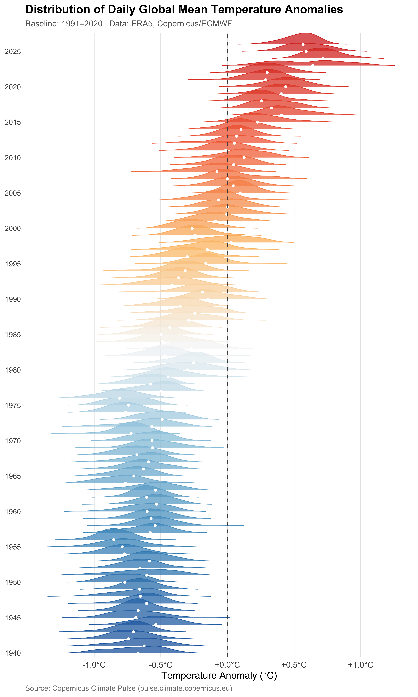
온실효과와 탄소 순환
이 절에서는 기후가 왜 변하는지를 하나의 인과 사슬로 따라간다. 출발점은 지구의 에너지 수지이고, 온실가스가 그 균형을 바꾸며, 인간이 탄소 순환을 교란해 온실가스를 늘렸다는 순서다.
출발점: 지구의 에너지 수지
지구의 평균 기온은 하나의 단순한 조건에서 결정된다. 들어오는 에너지와 나가는 에너지가 같아지는 지점이다. 태양은 주로 단파 복사(가시광선·자외선)를 방출하고, 지구는 이를 흡수했다가 자신의 온도에 맞춰 장파 복사(적외선)로 우주에 다시 내보낸다. 이 유입과 유출이 균형을 이룰 때 지구의 평균 기온(현재 약 15°C)은 안정적으로 유지된다.
이것은 욕조에 물을 받는 상황과 비슷하다. 수도꼭지에서 들어오는 물과 배수구로 빠져나가는 물이 같으면 수위가 일정하게 유지된다. 그렇다면 무언가가 유출을 방해하면 어떻게 될까? 온실가스가 정확히 그 역할을 한다.
온실효과의 메커니즘
온실가스(CO₂, CH₄, N₂O 등)는 마치 담요처럼 행동한다. 태양의 단파 복사는 잘 통과시키지만, 지구가 방출하는 장파 복사(적외선)는 흡수했다가 사방으로 다시 방출한다. 다시 방출된 적외선의 일부가 지표를 향하면서, 같은 표면 온도에서 우주로 빠져나가는 에너지가 줄어든다. 즉 유출 < 유입 상태가 되어 에너지가 지구-대기 시스템 안에 쌓인다. 대기 중 온실가스가 늘어날수록 담요는 두꺼워진다.
그런데 이 담요가 원래 나쁜 것은 아니다. 만약 온실가스가 전혀 없다면 지구의 평균 표면 온도는 약 -18°C에 불과할 것이다. 지구가 생명 유지에 적합한 약 +15°C를 유지하는 것은 자연적 온실효과 덕분이다 (Hsiang 와/과 Kopp 2018년). 문제는 온실효과 자체가 아니라, 인간 활동이 담요를 빠르게 두껍게 만들고 있다는 데 있다.
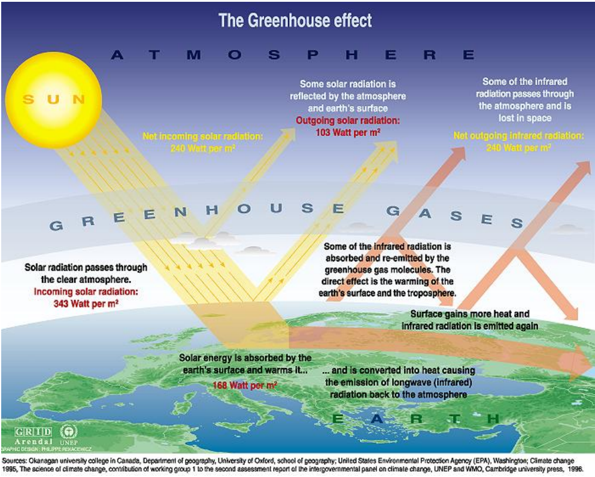
복사강제력과 새로운 균형
에너지 유입과 유출의 차이를 재는 개념이 복사강제력(radiative forcing, \(F\))이다. 복사강제력은 온실가스 증가 같은 외부 요인이 기준 상태에 비해 에너지 수지를 얼마나 바꾸는지 나타내며, 단위는 W/m²(제곱미터당 와트)다. \(F>0\)이면 지구-대기 시스템에 에너지가 순유입되어 온난화 압력으로 작용한다.
에너지가 쌓이면 지구는 스스로 데워진다. 더 따뜻해진 지표와 대기는 더 많은 적외선을 방출하므로, 시간이 지나면 더 높은 온도에서 새로운 균형에 도달한다. 욕조 비유로 돌아가면, 배수구가 좁아져 수위가 올라가면 수압이 커져 배수량이 다시 늘어나고, 결국 더 높은 수위에서 다시 균형이 맞춰지는 것과 같다. 기후가 따뜻해지면서 방출하는 에너지도 달라지므로, 원인으로서의 강제력과 반응까지 반영된 실제 지구 에너지 불균형을 같은 수치로 보아서는 안 된다.
에너지 불균형과 해양의 역할
IPCC 제6차 평가보고서(AR6)에 따르면 1970년대 이후 지구 에너지 수지에는 지속적인 불균형이 발생하여 과잉 에너지가 시스템 안에 쌓여 왔다. 이 과잉 에너지의 약 91%는 해양이 흡수했고, 나머지를 육지, 빙권, 대기가 나누어 흡수했다. 우리가 피부로 느끼는 대기 온도의 상승은 쌓이고 있는 에너지 가운데 작은 일부에 불과하다는 뜻이다.
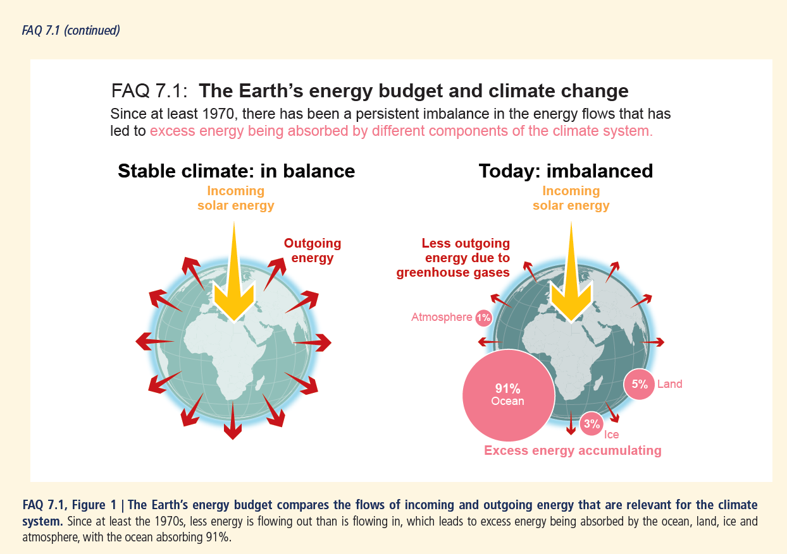
원인: 인간이 탄소 순환의 균형을 깨뜨렸다
그렇다면 이 강제력은 왜 최근 들어 커지고 있는가? 대기 중 탄소는 대기, 해양, 육지 생태계 사이를 끊임없이 순환한다. 식물은 광합성으로 CO₂를 흡수하고 호흡과 부패로 다시 내보내며, 바다는 표층에서 CO₂를 녹여 들였다가 내보낸다. 산업화 이전에는 이 순환이 대체로 균형 상태 - 배출과 흡수가 거의 상쇄되는 상태 - 에 있었다.
문제는 인류가 수억 년에 걸쳐 땅속에 저장된 화석연료(석탄, 석유, 천연가스)를 태우면서 탄소를 대기로 일방적으로 내보내기 시작한 데 있다. 화석연료 연소로 나오는 CO₂의 양은 자연이 주고받는 양에 비해 절대량으로는 작다. 그러나 자연 순환에서는 배출과 흡수가 거의 상쇄되는 반면, 인위적 배출은 육지와 해양의 추가 흡수로 일부만 제거되고 나머지는 대기에 남는다 (Tol 2023년).
| 구분 | 규모 (GtC/yr) |
|---|---|
| 화석연료 연소 | \(+7.8\) |
| 토지이용 변화 | \(+1.1\) |
| 육상 생태계 순흡수 | \(-2.6\) |
| 해양 순흡수 | \(-2.3\) |
| 대기 중 순증가 | \(\approx +4.0\) |
그 결과 대기 중 CO₂ 농도는 산업화 이전 약 280 ppm에서 2019년 약 410 ppm으로 약 47% 상승했고, 이는 지난 200만 년 중 가장 높은 수준이다. ppm(parts per million)은 공기 분자 100만 개 가운데 CO₂ 분자가 몇 개인지를 나타내는 단위다.
그 결과: 요인별 복사강제력의 크기
탄소 순환의 교란이 만든 강제력은 얼마나 클까? IPCC AR5는 2011년 기준 요인별 복사강제력을 다음과 같이 평가했다.
| 요인 | 복사강제력 (W/m², 2011년, 1750년 대비) | 방향 |
|---|---|---|
| 이산화탄소(CO₂) | \(+1.68\) | 온난화 |
| 메탄(CH₄) | \(+0.97\) | 온난화 |
| 할로카본 | \(+0.18\) | 온난화 |
| 아산화질소(N₂O) | \(+0.17\) | 온난화 |
| 에어로졸·구름 상호작용 | \(-0.82\) | 냉각 |
| 지표 알베도(토지이용 변화) | \(-0.15\) | 냉각 |
| 태양 활동(자연적 요인) | \(+0.05\) | 온난화 |
| 총 인위적 강제력 | \(\mathbf{+2.29}\) | 온난화 |
이 표에서 세 가지를 읽을 수 있다. 첫째, CO₂가 단연 가장 큰 온난화 요인이다. 둘째, 에어로졸(대기 중 미세 입자)은 햇빛을 반사하고 구름을 밝게 만들어 냉각 방향으로 작용하며, 온난화의 일부를 가려 왔다. 따라서 대기오염을 줄이면 공기는 깨끗해지지만 가려졌던 온난화가 일부 드러날 수 있다. 셋째, 태양 활동의 기여는 인위적 요인에 비해 매우 작다. 여러 요인이 상쇄된 뒤의 순효과, 즉 총 인위적 강제력 +2.29 W/m²가 바로 앞에서 정의한 에너지 불균형을 만드는 원인이다. 이 때문에 하나의 오염물질을 줄일 때에도 대기질과 기후에 대한 여러 경로를 구분해 평가해야 한다 (IPCC 2021년).
이 책의 탄소 수지 표와 강제력 표는 AR5 시점의 평가다. 과거 평가보고서의 수치를 오늘의 실시간 관측치로 읽지 말자. 모든 그래프와 표에서 기준연도, 평가 시점, 관측인지 모형인지 확인하는 습관이 중요하다.
주요 온실가스와 지구온난화지수
CO₂, 메탄(CH₄), 아산화질소(N₂O)는 질량이 같아도 기후에 미치는 영향과 대기에 머무는 시간이 다르다. CO₂는 인위적 온실가스 배출의 약 3/4을 차지하며 대기에 매우 오래 머문다. 메탄은 대기에 머무는 기간이 약 12년으로 짧지만 단위 질량당 열을 붙잡는 힘이 훨씬 강하다.
서로 다른 기체를 하나의 잣대로 비교하기 위해 만든 지표가 지구온난화지수(Global Warming Potential, GWP)다. GWP는 어떤 기체 1톤을 한꺼번에 배출했을 때 일정 기간 동안 누적되는 복사강제력을, 같은 질량의 CO₂와 비교한 값이다. GWP100의 100은 평가기간 100년을 뜻한다. ‘100년 뒤 기온’ 그 자체를 비교하는 지표는 아니다.
| 기체 | 대기에서의 시간 특성 | GWP100 (AR6) |
|---|---|---|
| CO₂ | 여러 흡수 과정이 작용해 하나의 수명으로 표현하기 어려움 | 1 |
| CH₄ | 약 12년의 교란 수명 | 약 27-30 |
| N₂O | 약 100년 규모 | 약 273 |
CO₂는 일부가 비교적 빨리 흡수되고 일부는 수백 년 이상 오래 남는다. 대략 배출량의 20% 정도는 1,000년 뒤에도 대기에 남는 것으로 평가된다. 따라서 CO₂ 전체에 ‘수명 50-200년’ 같은 단일 수치를 부여하는 것은 적절하지 않다. 수증기는 양적으로 가장 중요한 온실가스이지만 인간이 직접 그 양을 좌우하지 않는다. 온도가 오르면 대기 중 수증기가 늘어 온난화를 증폭시키므로, 장기 온난화에서는 되먹임(feedback) 변수로 다룬다.
인류세와 인간 활동의 역할
인간 활동은 지구의 지질, 경관, 생태계, 기후에 깊은 영향을 미쳐 왔다. 지질학자들은 이를 인류세(Anthropocene)라는 개념으로 포착한다. ’인류세’는 anthropo(인간)와 cene(새로운)의 합성어로, 현재를 인간이 지구 시스템의 주요 변인이 된 새로운 지질 시대로 규정하는 개념이다. 인류세는 식물과 동물 종의 대량 멸종, 해양 오염, 대기 변화 등 인간 활동이 남긴 돌이킬 수 없는 흔적들을 포괄한다.
에너지 생산·교통·산업 과정의 화석연료 연소가 인위적 온실가스 배출의 가장 큰 원인이며, CO₂가 인간 기원 온실가스 배출의 약 3/4를 차지한다. 산림 벌채와 토지 이용 변화도 숲과 토양에 저장된 탄소를 대기로 방출하여 온난화를 가속한다.
그런데 이 개념이 왜 경제학 교재에 나올까? 인류세는 단순히 “인간이 환경에 영향을 준다”는 진술이 아니다. 인간 경제활동의 규모가 지구 시스템 자체를 바꿀 만큼 커졌다는 질적 전환을 뜻한다. 과거에는 환경이 경제활동의 고정된 배경 무대였다면, 인류세에서는 경제활동 자체가 그 무대를 바꾸는 힘이 된 셈이다. 이는 이 책 전체를 관통하는 외부효과·시장실패 논의의 근본 전제가 된다.
에너지 불균형이 바꾸는 것: 물리계의 반응
에너지 불균형은 지구 어디에서나 똑같이 해소되지 않는다. 지역마다 열을 담는 능력(열용량), 햇빛을 반사하는 정도(알베도), 대기의 흐름이 다르기 때문에 반응의 속도와 크기가 다르다. 기온과 강수만 바뀌는 것도 아니다. 바다와 얼음, 폭풍까지 물리계 전체가 반응한다.
기온과 강수의 공간적 재분배
- 육지가 바다보다 빨리 데워진다. 육지는 열용량이 작아 같은 에너지를 받아도 해양보다 더 빠르고 크게 가열된다. 여름 해변에서 모래는 뜨겁지만 바닷물은 미지근한 것과 같은 이치다.
- 북극 증폭(Arctic amplification). 눈과 해빙이 녹으면 하얗게 빛을 반사하던 표면이 어두운 바다나 땅으로 바뀐다. 반사율(알베도)이 낮아지면 더 많은 햇빛을 흡수하고, 이것이 다시 얼음을 녹인다. 이 되먹임 때문에 고위도, 특히 북극이 가장 크게 가열된다.
- 강수의 재분배. 대략 “습윤한 곳은 더 습해지고, 건조한 곳은 더 건조해진다.” 적도 부근 열대수렴대의 강수는 강해지고, 아열대 건조 지대는 넓어지는 경향이 있다.
- 계절성의 심화. 몬순 지역에서는 여름철 강수가 늘고, 지역과 계절에 따른 변동성이 커진다.
해수면, 폭풍, 해양 산성화
해수면 상승에는 두 가지 원인이 함께 작용한다. 하나는 열팽창(thermal expansion)이다. 바닷물이 데워지면 부피가 늘어난다. 바다의 평균 수심이 약 3km나 되기 때문에 팽창률이 작아도 누적되면 큰 상승폭이 된다. 다른 하나는 빙하·빙상의 융해다. 육지 위의 얼음이 녹아 바다로 흘러들면 바닷물의 총량 자체가 늘어난다. 이미 바다에 떠 있는 해빙은 녹아도 해수면을 거의 높이지 않는다는 점에서 육지의 얼음과 다르다.
폭풍은 빈도보다 강도가 문제다. 온대저기압은 강해질 가능성이 있고, 열대저기압(태풍·허리케인)은 발생 횟수나 면적보다 최대풍속과 강수량 같은 강도가 커질 것으로 전망된다.
해양 산성화는 온난화를 거치지 않는 별도의 경로로 진행된다. 대기 중 CO₂가 늘어나면 바다가 더 많은 CO₂를 흡수하고, 이는 \(\text{CO}_2 + \text{H}_2\text{O} \rightarrow \text{H}_2\text{CO}_3\)(탄산) 형성으로 이어져 수소이온(\(\text{H}^+\)) 농도를 높이고 pH를 낮춘다. 이렇게 산성화된 바닷물은 산호·조개·익족류 등 석회질 골격이나 껍질을 가진 생물에 직접적 피해를 준다. 탄산음료에 달걀 껍데기를 넣어 두면 녹는 실험을 떠올리면 된다.
한눈에 보는 인과 사슬: IPCC 공식 흐름도
지금까지 살펴본 물리적 과정은 IPCC의 공식 인과 흐름도 한 장에 그대로 압축되어 있다(그림 1.5). 이 그림은 인간 활동에서 출발해 배출(Emissions)과 대기 중 농도(Concentrations)로 이어지고, 이것이 다시 복사강제력(Radiative Forcing)을 거쳐 전 지구 온난화(Global Warming)로, 그리고 최종적으로 지역별 기후변화와 기후영향인자(Regional Climate Change, Climatic Impact-Drivers)로 파급되는 전 과정을 하나의 순서도로 보여준다.
| 그림의 구간 | 내용 | 이 장의 대응 부분 |
|---|---|---|
| Human activities | CO₂, 비CO₂ 기체, 기타(단기체류 기후강제인자·토지이용) | 원인: 탄소 순환의 교란 |
| Emissions → Concentrations | 배출이 대기 중 농도로 누적되는 구간 | 탄소 수지 표, 욕조 예제 |
| Radiative Forcing | 관측선이 약 2.3 W/m² 부근에서 시나리오별로 갈라짐 | 메커니즘, 요인별 강제력 |
| Global Warming | 불균형이 실제 기온 상승으로 나타남 (관측 vs. 전망) | 관측 증거 절 |
| Regional CC → Impact-Drivers | 지역별 기온·강수 재분배 지도 | 물리계의 반응 절 |
왼쪽의 되먹임 화살표(Carbon-Cycle and non-CO₂ biogeochemical feedbacks)는 온난화가 다시 탄소 순환에 영향을 미치는 되먹임 고리를 나타낸다. 예컨대 바다가 따뜻해지면 CO₂를 녹이는 능력이 떨어진다. 색깔로 구분된 선들은 5개의 핵심 공유사회경제경로(SSP1-1.9~SSP5-8.5) 시나리오에 따른 분기를, 회색 막대는 2100년 시점의 RCP 시나리오 범위를 보여준다. 각 패널의 세로축과 단위를 따로 읽어야 한다. 배출량, 농도, 강제력, 기온은 서로 연결되지만 같은 변수가 아니다.
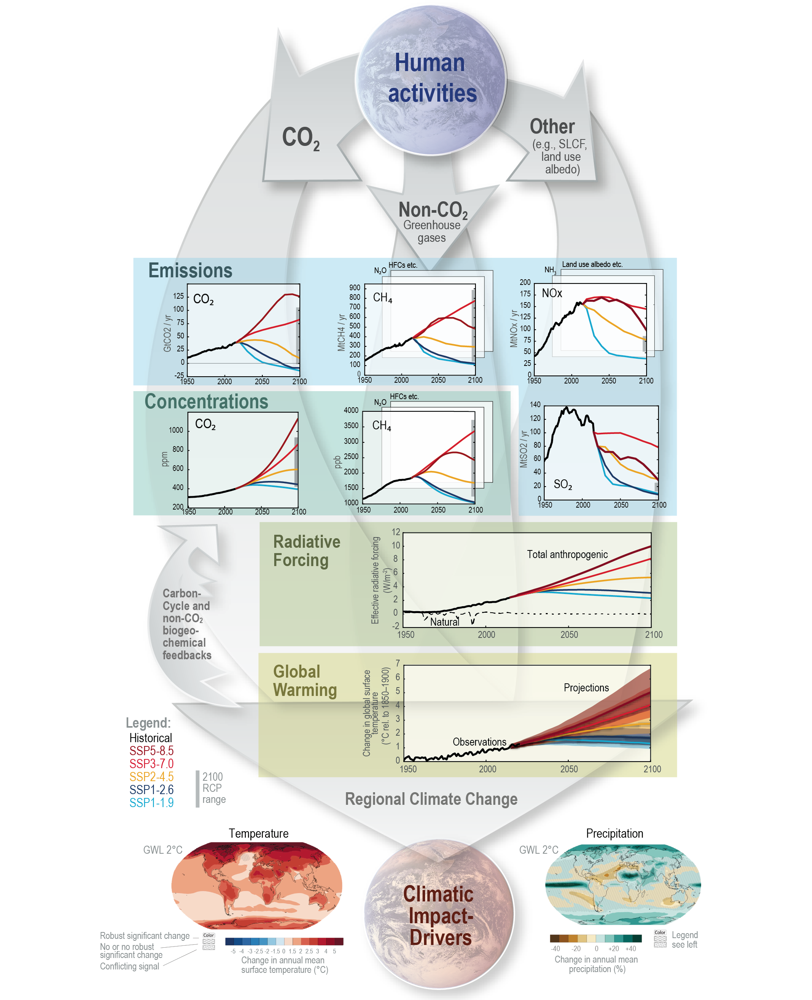
기후변화의 관측 증거
기온 상승과 극단 기상의 증가
IPCC AR6는 “인간의 영향이 대기, 해양, 육지를 온난화시켰다는 것은 명백하다(unequivocal)”고 결론지었다. 역대 IPCC 보고서 가운데 가장 강한 표현이다. 이 보고서에서 2011-2020년 평균 전 지구 표면기온은 산업화 이전(1850-1900년) 평균보다 약 1.1°C 높았다. 이 숫자는 2026년 현재의 연간 기온이라는 뜻이 아니다. 장기 평균, 특정 연도의 이상값, 지역의 일별 기온은 구분해야 한다 (IPCC 2021년).
관측 증거의 주요 내용을 정리하면 다음과 같다.
- 원인의 분해. 최근 연구(Quilcaille et al., 2025)는 화석연료와 시멘트 생산에서 나온 CO₂가 이 온난화 가운데 약 0.67°C를 설명한다고 추정했다. 나머지는 메탄 등 다른 온실가스, 토지이용 변화, 에어로졸의 냉각 효과 등이 상쇄된 결과다.
- 전례 없는 속도. 최근의 상승 속도는 지난 2,000년 동안 전례가 없으며, 태양 활동이나 화산 같은 자연적 요인만으로는 설명되지 않는다.
- 특징적인 패턴. 온난화는 해양보다 육지에서, 저위도보다 고위도(북극)에서, 여름보다 겨울에, 낮보다 밤에 더 크게 나타난다.
- 사람에게 미치는 영향. 관측된 약 1.1°C의 온난화만으로도 홍수·작물 실패·열대저기압·산불·가뭄·폭염에 노출되는 인구가 두 배 이상 늘어난 것으로 추정된다(Lange et al., 2020).
과거에도 기후가 변했다는 사실은 최근 변화의 원인을 설명하지 않는다. 현재의 원인을 평가하려면 온실가스와 자연적 요인을 구분하고, 각 요인이 예측하는 시간·공간 패턴을 관측과 비교해야 한다. 자연적 변동이 존재한다는 명제와 인간이 최근 온난화를 유발했다는 명제는 동시에 참일 수 있다.
흔한 반론: “지구는 원래 더 뜨거웠다”
“공룡이 살던 백악기의 지구는 지금보다 훨씬 뜨거웠다. 지금의 온난화도 자연적 주기의 일부 아닌가?” 기후변화에 대한 가장 흔한 반론 가운데 하나다. 이 주장은 부분적으로 사실이지만 결론은 틀렸다. 핵심은 ‘얼마나 빨리’, 그리고 ‘무엇이 원인인가’다. 다섯 가지로 나누어 답해 보자.
(1) 인류 문명은 이례적으로 안정된 기후 위에서 발달했다. 백악기(약 1억 4,500만 년 전~6,600만 년 전)는 현재보다 8-14°C나 따뜻했지만 그때는 인류가 없었다. 농업, 도시, 해안 인프라는 모두 홀로세(최근 약 1만 년)의 좁은 기온 범위 안에서 설계되고 발전했다. 문제는 지구가 견딜 수 있느냐가 아니라 우리 문명이 견딜 수 있느냐다.
(2) 현재 CO₂ 농도는 적어도 수백만 년 사이 최고 수준이다. 지난 80만 년간의 빙하 코어 기록에서 CO₂ 농도는 약 180-300 ppm 사이를 오르내렸다. 현재는 약 420 ppm으로, 이 자연적 상한을 40% 이상 넘어섰다.
(3) 현재 온난화 속도는 자연적 변화의 수십 배다. 마지막 빙하기에서 벗어날 때 기온은 대략 100년에 0.07-0.14°C씩 올랐다. 20세기 한 세기 동안의 상승(약 0.7°C)은 이보다 5-10배 빠르고, 21세기에 예상되는 상승은 자연적 속도의 최소 20배에 이른다(NASA, 2025). 생태계와 사회가 적응할 시간이 그만큼 짧다는 뜻이다.
(4) 자연적 궤도 요인은 오히려 약한 냉각을 가리킨다. 지구의 공전 궤도 모양(이심률), 자전축 기울기, 세차운동이 만드는 장주기 변화(밀란코비치 주기)에 따르면 지구는 지금 완만한 냉각 추세에 있어야 한다. 그런데도 기온은 급상승하고 있다.
(5) 온난화의 ’지문’이 온실가스를 가리킨다. 만약 태양이 더 강해져서 지구가 데워진다면 대기 전체가 함께 데워져야 한다. 그런데 관측해 보면 아래쪽 대기(대류권)는 데워지고 위쪽 대기(성층권)는 오히려 식고 있다. 이는 온실가스가 열을 아래쪽에 가둘 때 나타나는 특유의 패턴이다. 또 인간의 CO₂ 배출량은 화산 배출량보다 100배 이상 많다(NASA, 2025).
하키스틱 그래프와 관측 기록
과거 1,000년 이상의 기온은 나무 나이테, 빙하 코어, 산호 같은 기후 대리지표(proxy)로 재구성한다. 그림 1.6 은 이렇게 재구성한 기온(초록선)과 근대 기기 관측(파란선)을 이어 붙인 그림이다. 중세 온난기나 소빙기 같은 자연적 변동은 진폭이 크지 않은 반면, 20세기 이후의 상승 폭과 속도는 비교할 수 없을 만큼 크다. 긴 손잡이 끝에 날이 꺾여 올라간 모양 때문에 ’하키스틱 그래프’라 부른다.
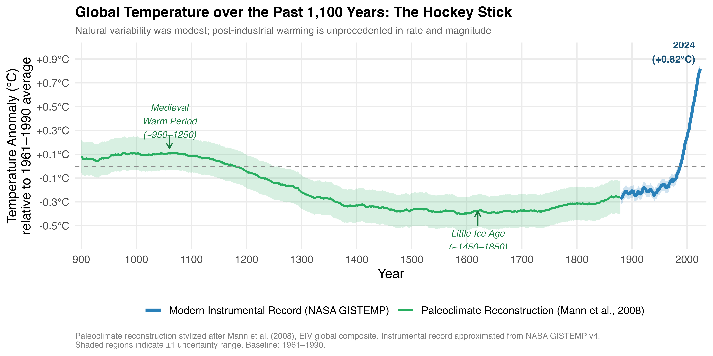
그림 1.7 는 하키스틱의 근대 구간을 실제 관측치로 다시 확인한 것이다. HadCRUT5 자료가 사용하는 기준기간은 1861-1890년이므로 앞의 IPCC 수치와 단순 비교하지 않는다. 해마다의 변동 속에서도 평균이 1970년대 이후 뚜렷한 상승 추세를 보인다. 회색 구간은 추정의 불확실성을 나타내며, 해마다 나타나는 기온 변동의 범위와는 다르다.
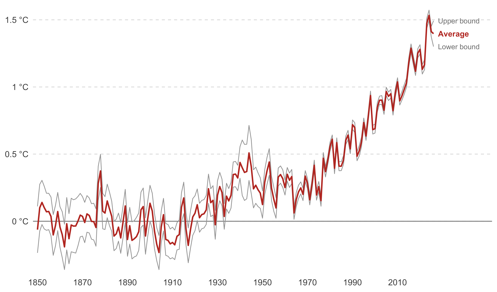
기타 관측 변화
기온뿐 아니라 해수면, 해양의 열함량, 빙하에서도 변화가 관측된다.
- 해수면 상승. 지난 한 세기 동안 전 지구 평균 해수면은 약 20cm 상승했고, 이는 지난 2,000년 중 가장 빠른 속도다. 21세기 말까지는 시나리오에 따라 대략 0.3-1.0m의 추가 상승이 전망된다. 어느 시점까지 얼마나 상승하는지를 비교할 때에는 시나리오와 기준기간을 함께 표시해야 한다 (IPCC 2021년).
- 해양 산성화. 앞 절에서 설명한 화학적 경로를 따라 바다의 pH가 낮아지고 있다.
- 빙하 후퇴. 1950년대 이후 세계 대부분의 산악 빙하가 유례없는 속도로 후퇴하고 있으며, 그린란드 빙상의 융해는 1990년대 이후 크게 가속되었다.
기후 위험은 지역과 현상에 따라 다르게 변한다. 따라서 ’기후변화가 모든 종류의 재해 건수를 똑같이 늘린다’고 일반화하지 말고, 폭염·집중호우·가뭄·열대저기압 각각의 강도와 빈도에 관한 증거를 구분해서 읽어야 한다.
비가역성과 티핑 포인트
비가역성의 개념
비가역성(irreversibility)은 어떤 변화를 일으킨 원인을 줄이더라도 관심 있는 시간범위 안에서 원래 상태로 쉽게 돌아가지 않는 성질이다. 엎질러진 물을 다시 담을 수 없는 것과 같다. 한 번 녹은 큰 빙상이나 손상된 생태계가 곧바로 복원되는 것은 아니다.
최근 연구들은 일부 지역에서 기후변화가 비가역적으로 나타날 수 있음을 보여준다. 대기 중 CO₂를 나중에 제거하더라도 그 영향이 일부 지역에서는 계속 남을 수 있다는 것이다(Kim et al., 2022). 대기 변수의 비가역적 변화는 산악 빙하, 해빙, 열대우림 등 지구 시스템의 다른 구성요소에서도 비가역적 변화를 일으킬 수 있다. 이런 위험이 특히 큰 곳, 즉 비가역성 핫스팟으로는 남극, 그린란드, 알래스카, 히말라야 고산 빙하 지역, 그리고 아프리카·남미의 몬순 지역 등이 꼽힌다.
’비가역적’이라고 말할 때에는 수십 년, 수백 년, 수천 년 가운데 어느 시간범위를 뜻하는지 함께 생각해야 한다. 인간의 의사결정 관점에서는 수백 년 동안 되돌릴 수 없다면 사실상 영구적이다.
기후 티핑 포인트
티핑 포인트(tipping point)는 시스템이 임계값을 넘으면서 자체 되먹임에 의해 질적으로 다른 상태로 전환될 수 있는 문턱이다. 의자를 뒤로 기울이다 보면 어느 순간 균형을 잃고 넘어가는 지점이 있는 것과 같다. 그 지점 전까지는 조금 기울여도 다시 돌아오지만, 지점을 넘으면 작은 힘으로도 갑작스럽고 되돌리기 어려운 변화가 일어난다. 티핑 포인트에 도달하면 작은 변화가 갑작스럽고 비가역적이며 연쇄적인 더 큰 변화를 촉발할 수 있다.
파리협정의 온도 목표를 넘어서면 영구동토층 해빙, 아마존 열대우림의 사바나화 같은 비가역적 변화의 위험이 커진다. 대표적인 예가 그린란드 빙상이다. 그린란드 빙상은 모두 녹으면 해수면을 6미터 이상 높일 만큼의 물을 담고 있으며, 1990년대 이후 융해가 크게 가속되었다. 일정 수준을 넘으면 수천 년에 걸쳐 되돌릴 수 없는 붕괴로 이어지는 임계점에 이를 수 있다. 스테판 등(Steffen et al., 2018)은 이런 비선형적 되먹임 과정이 지구 시스템의 미래 궤도를 결정하는 지배적 요인이 될 수 있다고 경고했다. 정확한 임계값과 반응 속도에는 큰 불확실성이 있다.
티핑은 모든 비선형 현상의 다른 이름이 아니다. 평균기온이 조금 올라 폭염 확률이 크게 증가하는 현상은 분포의 이동만으로도 나타날 수 있으며, 반드시 시스템의 티핑을 뜻하지 않는다. 경제학에서는 되돌리기 어려운 손실과 불확실한 문턱이 있다는 사실이 ’조금 더 지켜보고 나중에 결정하자’는 선택의 비용을 어떻게 바꾸는지를 묻는다(9장).
극단 기상의 빈도 변화: 온도별 비교
평균기온의 변화는 극단적 고온의 발생확률을 크게 바꿀 수 있다. IPCC AR6의 평가에 따르면 산업화 이전 기후에서 50년에 한 번 나타나던 육지의 고온 극한이 1°C 온난화에서 약 4.8배, 1.5°C에서 약 8.6배(약 6년에 한 번), 2°C에서 약 13.9배, 4°C에서 약 39.2배(사실상 매년) 더 자주 발생한다. 평균이 조금 움직였을 뿐인데 꼬리의 확률은 기하급수적으로 늘어난다. 앞에서 본 ’분포의 이동’이 꼬리위험을 얼마나 크게 바꾸는지 보여주는 대표적 예다.
이는 전 지구 육지를 대상으로 한 평가이며, 특정 도시의 특정 폭염에 그대로 대입할 수 있는 예측식은 아니다 (IPCC 2021년).
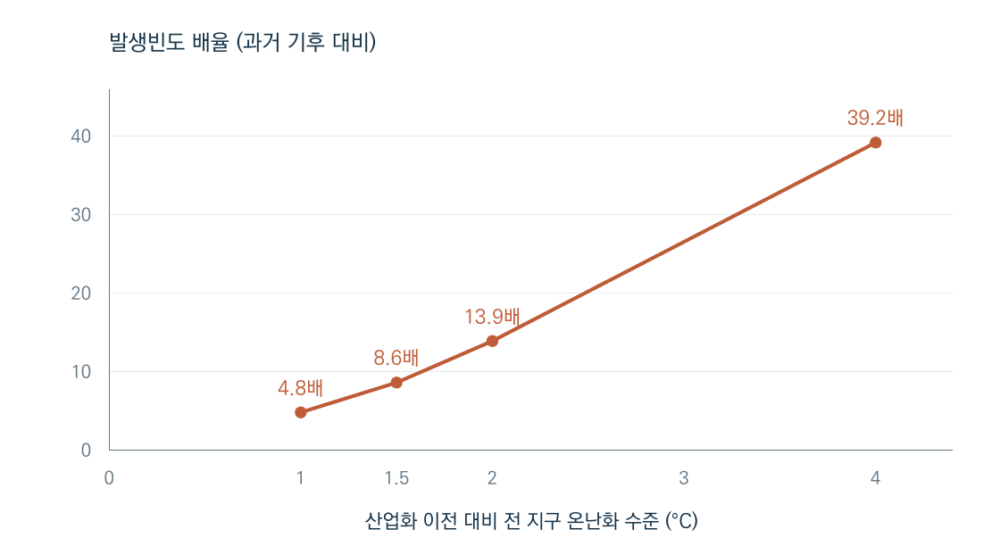
미래 전망: 시나리오와 예측
IPCC란 무엇인가
미래 전망을 이야기하기 전에, 기후과학의 ’공식 요약본’을 만드는 기관을 알아 두자. IPCC(Intergovernmental Panel on Climate Change, 기후변화에 관한 정부간 협의체)는 1988년 세계기상기구(WMO)와 유엔환경계획(UNEP)이 설립한 정부간 기구다. IPCC는 직접 연구를 수행하지 않는다. 대신 전 세계에서 발표된 과학 문헌을 종합·평가하고, 각국 정부의 승인을 거쳐 보고서로 발간한다. 세 개의 실무그룹이 있다. 제1실무그룹(WG1)은 물리과학, 제2실무그룹(WG2)은 영향·적응·취약성, 제3실무그룹(WG3)은 완화(배출 감축)를 다룬다.
| 차수 | 연도 | 의의 |
|---|---|---|
| FAR(1차) | 1990 | 유엔기후변화협약(UNFCCC, 1992 리우) 협상의 과학적 근거 |
| SAR(2차) | 1995 | “인간 영향이 식별 가능하다” - 교토의정서(1997)의 근거 |
| TAR(3차) | 2001 | SRES 시나리오, “likely(66-90%)” 같은 확률 언어 도입 |
| AR4(4차) | 2007 | “온난화는 명백하다(unequivocal)” - 노벨평화상 공동 수상 |
| AR5(5차) | 2013-14 | RCP 시나리오 도입 - 파리협정(2015)의 근거 |
| AR6(6차) | 2021-23 | SSP 시나리오 도입 - 1차 전 지구적 이행점검(Global Stocktake, 2023)의 근거 |
이 장에서 다룰 RCP, SSP, NGFS 시나리오는 모두 이 평가보고서들이 시대에 따라 채택하고 교체해 온 시나리오 체계와 관련이 있다. RCP는 AR5의, SSP는 AR6의 산물이다.
시나리오란 무엇인가
기후 전망은 조건부 예측(conditional prediction)이다. “만약 세계가 이렇게 움직인다면 기후는 이렇게 될 것이다”라는 형식이다. 시나리오는 “가장 그럴듯한 미래”를 맞히려는 확률적 예측이 아니라, 미래 조건을 현재와 연결하는 인과적 이야기 구조를 갖는 내적으로 일관된 가능한 미래의 서술이다(Foster, 1993; Glenn, 2009).
기후 시나리오는 크게 두 축으로 구성된다. 하나는 인구, 경제성장, 기술, 국제협력 같은 미래 사회경제 시스템의 진화 경로이고, 다른 하나는 그 경로에서 발생할 CO₂ 및 온실가스 농도의 변화다. 이 두 구성 요소를 결합하여 기후과학자와 경제학자들은 가능한 기후 미래와 그에 대응하는 위험 및 기회를 탐구한다. 미래 온난화는 시나리오에 따라 2100년까지 약 1.5°C에서 거의 5°C에 이르는 넓은 범위에 걸친다(IPCC AR6).
IPCC 시나리오: RCP와 SSP
대표농도경로(Representative Concentration Pathways, RCP)는 IPCC AR5에서 사용된 체계로, 2100년까지 도달하는 복사강제력 수준(W/m²)으로 이름을 붙인다. RCP8.5는 높은 온실가스 농도와 계속 증가하는 복사강제력을, RCP2.6은 배출이 정점을 찍은 뒤 감소하는 경로를 나타낸다. RCP는 “어떤 농도에 도달하는가”만 정하고, 그런 농도가 어떤 사회에서 나오는지는 따로 정하지 않았다.
공유사회경제경로(Shared Socioeconomic Pathways, SSP)는 IPCC AR6에서 본격적으로 쓰인 체계로, 사회경제적 발전 경로(서사)를 먼저 정하고 여기에 기후정책 수준을 결합한다. SSP는 원래 완화 도전(mitigation challenge)과 적응 도전(adaptation challenge)이라는 2차원 공간에서 정의된 다섯 개의 원형(archetype)이다.
| 정식 명칭 | 부제 | 핵심 서사 | 완화 도전 | 적응 도전 | |
|---|---|---|---|---|---|
| SSP1 | Sustainability(지속가능성) | Taking the Green Road | 강력한 국제협력과 지속가능발전 우선 | 낮음 | 낮음 |
| SSP2 | Middle of the Road(중도) | - | 현재의 사회·경제 추세가 큰 변화 없이 지속 | 중간 | 중간 |
| SSP3 | Regional Rivalry(지역 경쟁) | A Rocky Road | 국가주의와 분절 심화, 협력 약화, 느린 성장 | 높음 | 높음 |
| SSP4 | Inequality(불평등) | A Road Divided | 국가 내·국가 간 격차 심화, 소수 엘리트가 배출 대부분 | 낮음 | 높음 |
| SSP5 | Fossil-fueled Development(화석연료 기반 개발) | Taking the Highway | 급속한 화석연료 기반 성장, 높은 에너지 소비 | 높음 | 낮음 |
여기서 ’도전(challenge)’이란 그 세계에서 배출을 줄이거나 기후변화에 적응하는 일이 얼마나 어려운가를 뜻한다. 예컨대 SSP5는 부유하고 기술이 발달해 적응은 쉽지만, 경제가 화석연료에 깊이 의존하므로 배출을 줄이기는 어렵다. “낮은 도전”은 협력과 발전이 만들어 내는 결과이지, 협력 자체와 모순되는 말이 아니다.
SSP와 RCP의 결합: 다섯 개의 대표 시나리오
“SSP2-4.5” 같은 표기는 SSP 서사(앞의 숫자)와 2100년 복사강제력 수준(뒤의 숫자)을 결합한 것이다. 이론적으로는 어떤 조합도 가능하지만, IPCC가 기후모델을 실제로 돌려 핵심적으로 보고한 것은 다음 다섯 개의 대표 시나리오(marker scenarios)다.
| 표기 | 서사 | 2100년 강제력 | 성격 |
|---|---|---|---|
| SSP1-1.9 | 지속가능성 | 약 1.9 W/m² | 1.5°C 목표 경로 |
| SSP1-2.6 | 지속가능성 | 약 2.6 W/m² | 2°C 목표 경로(구 RCP2.6에 대응) |
| SSP2-4.5 | 중도 | 약 4.5 W/m² | 중간 수준의 정책 시나리오(구 RCP4.5에 대응) |
| SSP3-7.0 | 지역 경쟁 | 약 7.0 W/m² | 분절된 세계, 높은 배출 |
| SSP5-8.5 | 화석연료 기반 개발 | 약 8.5 W/m² | 최고 배출 경로(구 RCP8.5에 대응) |
그렇다면 왜 SSP5-1.9 같은 조합은 없을까? “화석연료로 질주하는 세계”가 동시에 “1.5°C 목표를 달성”하는 것은 현실적으로 앞뒤가 맞지 않기 때문이다. 서사와 강제력 수준이 내적으로 일관되어야 한다는 시나리오의 정의를 떠올리면 이해하기 쉽다. 그래서 실제로 모델링·보고되는 조합은 이 다섯 개와 소수의 보조 시나리오로 좁혀진다.
균형기후민감도(ECS): 되먹임이 무엇을 불확실하게 만드는가
시나리오가 “얼마나 배출할 것인가”에 대한 불확실성이라면, 균형기후민감도(Equilibrium Climate Sensitivity, ECS)는 “같은 배출에 기후가 얼마나 민감하게 반응하는가”에 대한 불확실성이다. ECS는 대기 중 CO₂ 농도가 산업화 이전의 두 배가 되었을 때, 기후 시스템이 새로운 에너지 균형에 도달한 후의 지구 평균 기온 상승폭이다. IPCC AR6는 ECS의 최적 추정값을 3.0°C, 가능성이 높은(likely) 범위를 2.5-4.0°C로 제시한다.
이 범위가 넓은 이유는 온난화가 다시 온난화를 증폭시키거나 완화시키는 되먹임(feedback)의 강도가 불확실하기 때문이다. 주요 되먹임은 다음과 같다.
- 수증기 되먹임(양, 잘 알려져 있음). 따뜻한 공기는 더 많은 수증기를 담을 수 있다(클라우지우스-클라페이롱 관계: 기온이 1°C 오를 때 포화수증기량이 약 7% 증가). 수증기 자체가 온실가스이므로 온난화가 증폭된다.
- 알베도 되먹임(양, 잘 알려져 있음). 온난화로 눈과 해빙이 줄면 지표의 반사율이 떨어지고, 더 많은 햇빛을 흡수해 온난화가 증폭된다.
- 구름 되먹임(부호는 양으로 평가되나 크기가 가장 불확실). 구름은 상반된 두 효과를 가진다. 두껍고 낮은 층적운은 햇빛을 반사해 지구를 식히고, 얇고 높은 권운은 지구가 내보내는 열을 가둬 지구를 데운다. 온난화가 진행되면 아열대 바다 위의 낮은 구름이 얇아지거나 줄어들 가능성이 높아 반사가 줄고 추가 온난화가 생긴다. 그러나 이 효과의 크기가 기후모델마다 크게 갈리며, ECS 범위를 만드는 핵심 요인이다.
ECS의 불확실성은 경제학에서 매우 중요하다. 같은 배출 경로라도 ECS가 2.5°C인 세계와 4°C인 세계에서 피해는 크게 다르기 때문이다. 9장에서 다룰 ‘두꺼운 꼬리’ 논쟁은 바로 이 불확실성에서 출발한다.
시간 지연 문제
CO₂ 배출과 온난화 사이에는 시간 지연이 있다. 오늘 배출한 CO₂의 온난화 효과가 충분히 나타나기까지는 수십 년이 걸린다. 해양이 열을 천천히 흡수하기 때문이다. 또 배출된 CO₂의 상당 부분은 아주 오래 대기에 남는다. 한 추정으로는 오늘 배출한 CO₂의 약 70%가 100년 후에도 대기 중에 남아 있다 (Wichman 2024년).
다만 이런 숫자를 해석할 때는 주의가 필요하다. 배출 뒤 CO₂는 대기·육지·해양 사이에 재분배되고, 해양의 열흡수도 변한다. CO₂가 일정한 반감기로 단순히 분해된다고 보거나, 100년 뒤 잔존율을 모든 배출에 동일한 상수로 적용하는 것은 부정확하다. 전 지구 순 CO₂ 배출을 0으로 낮추는 것은 CO₂가 유발하는 온난화를 대체로 안정시키는 핵심 조건이지만, 해수면처럼 반응이 느린 변수가 즉시 멈추는 것은 아니다 (IPCC 2021년).
경제학적으로 이 시간 지연이 중요한 이유는 분명하다. 비용은 현재 세대가 부담하고, 편익은 미래 세대가 누리는 구조가 만들어지기 때문이다. 이것이 기후 문제를 경제학적으로 독특하게 만드는 핵심 요인이며, 7장에서 다룰 할인율 논쟁의 출발점이다.
NGFS 시나리오: 금융과 거시경제를 위한 틀
IPCC 시나리오가 기온·강수 같은 기후-물리 변수에 초점을 맞춘다면, 녹색금융시스템네트워크(Network for Greening the Financial System, NGFS)는 GDP, 인플레이션, 자산 가격 같은 경제·금융 변수에 기후 위험이 미치는 영향을 평가하기 위한 시나리오를 만든다. NGFS는 2017년에 출범한 중앙은행과 금융감독기관의 국제 협의체로, 한국은행과 금융감독원도 회원이다.
NGFS는 기후 위험을 두 축으로 구분한다.
- 전환위험(transition risk): 저탄소 경제로 전환하는 과정에서 생기는 경제적 위험이다. 탄소 가격의 급격한 변화, 더 이상 쓸 수 없게 된 화석연료 설비나 매장량 같은 좌초자산(stranded assets), 산업 구조의 재편 등이 여기에 해당한다. 정책이 얼마나 일찍, 얼마나 매끄럽게 도입되는가에 크게 좌우된다.
- 물리적위험(physical risk): 기후변화 자체가 초래하는 실물 피해 위험이다. 폭염·홍수·해수면 상승으로 인한 자산 파손과 생산성 손실이 여기에 해당한다.
이 두 축을 조합하면 네 가지 범주가 나온다(그림 1.9).
| 범주 | 내용 | 대표 시나리오 | 전환위험 | 물리적위험 |
|---|---|---|---|---|
| 질서정연한 전환(Orderly) | 이르고 점진적인 정책으로 전환 성공 | Net Zero 2050, Below 2°C | 낮음 | 낮음 |
| 무질서한 전환(Disorderly) | 뒤늦고 급격한 정책 전환, 경제적 혼란 | Delayed Transition | 높음 | 낮음~중간 |
| 온실 세계(Hot house world) | 추가 전환 없이 현재 정책 유지, 2°C 이상 상승 | NDCs, Current Policies | 낮음 | 높음 |
| 너무 적게, 너무 늦게(Too little, too late) | 대응이 늦고 불충분해 두 위험이 모두 현실화 | Fragmented World | 높음 | 높음 |
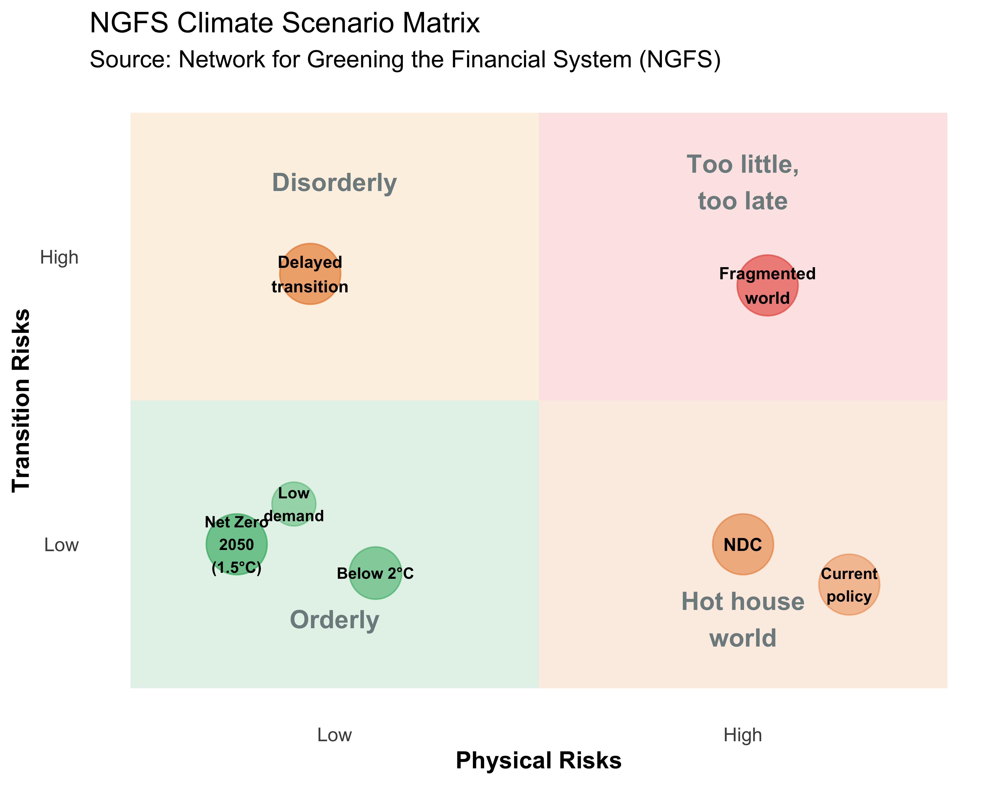
여기에는 하나의 함정이 있다. “전환위험이 낮다”가 항상 좋은 뜻은 아니다. 전환이 순조로워서 낮을 수도 있고(질서정연한 전환), 아예 전환을 하지 않아서 낮을 수도 있다(온실 세계). 이 둘을 가르는 것이 바로 물리적위험의 수준이다. 단기적으로 전환위험만 보고 안심하면 장기적인 물리적위험을 놓치게 된다.
시나리오 분석의 필요성
NGFS 시나리오가 기후경제학에서 갖는 핵심 함의는 시나리오 분석의 필요성이다. 기후 위험은 전통적인 리스크 평가 방법으로 다루기 어렵다. 그 이유는 세 가지다.
- 수십 년 이상의 장기 시계에 걸쳐 전개된다. 과거 몇 년의 손실 기록으로는 미래를 추정하기 어렵다.
- 정책 경로와 사회경제적 요인에 따라 불확실성이 크다. 어떤 정책이 도입될지가 위험의 크기를 바꾼다.
- 지역과 산업에 걸쳐 복잡하게 나타난다. 같은 정책도 석탄 발전소와 IT 기업에 전혀 다른 영향을 준다.
따라서 시나리오 분석은 중앙은행, 감독기관, 금융기관, 기업, 정책 입안자들이 기후 위험을 이해하기 위한 필수 도구로 자리 잡았다. 은행에 대해 “온실 세계 시나리오가 실현된다면 대출 손실이 얼마나 늘어나는가”를 계산해 보는 기후 스트레스 테스트가 대표적인 예다.
기후 관련 재해의 역사적 추세
재해 손실의 규모
기후 관련 재해의 경제적 손실은 어느 정도일까? 재해 연구에서 가장 널리 쓰이는 자료는 벨기에 루뱅대학 재해역학연구센터(CRED)가 운영하는 국제재해데이터베이스(EM-DAT)로, 전 세계적으로 자유롭게 이용 가능한 대표적인 재해 손실 자료다. EM-DAT에 따르면 1980년 이후 재해 가운데 홍수와 폭풍이 차지하는 비중이 커졌고, 보고된 사건 수는 1980년 대비 3-4배로 늘었다.
재보험사들의 집계도 손실의 규모를 보여준다. 재보험사는 보험회사가 감당하기 어려운 큰 손실을 다시 보험으로 받아 주는 회사이므로, 전 세계 재해 손실을 체계적으로 추적한다.
- 뮌헨재보험(Munich Re, 2023): 전 세계 재해 손실 약 2,500억 달러. 뉴질랜드나 포르투갈의 한 해 GDP에 맞먹는 규모다.
- 스위스재보험(Swiss Re, 2023): 경제적 손실 약 2,800억 달러, 재해 332건, 사망자 약 76,000명. 그중 약 1,080억 달러만 보험으로 보상되었다.
보험으로 보상되지 않은 나머지 손실은 개인, 기업, 정부가 직접 떠안는다. 이 차이를 보험 격차(protection gap)라 부르며, 특히 개발도상국에서 크다. 또 공급망 붕괴, 생산성 저하, 건강·교육 손실 같은 점진적이고 국지적인 영향까지 포함하면 실제 비용은 보험사 추정치를 훨씬 웃돌 것이다.
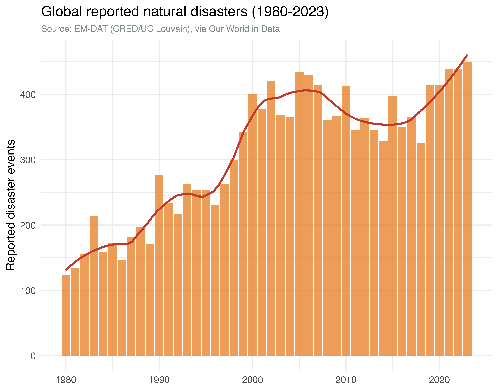
보고 건수를 해석할 때의 주의점
재해 데이터베이스의 보고 건수는 물리적 위험 그 자체와 같지 않다. 관측·통신 체계가 개선되면 과거에는 누락되던 사건이 더 많이 기록된다. 인구와 자산이 위험 지역에 늘어나도 보고 피해는 커진다. 따라서 피해를 세 요소로 나누어 생각해야 한다.
\[\text{피해} = f(\text{위험의 강도(hazard)},\ \text{노출(exposure)},\ \text{취약성(vulnerability)})\]
- 위험의 강도: 홍수의 수위, 태풍의 풍속처럼 물리적 사건의 세기
- 노출: 그 지역에 있는 사람과 자산의 양
- 취약성: 같은 강도의 사건이 왔을 때 얼마나 쉽게 피해를 입는가(건물의 내구성, 조기경보 체계, 보험 가입 등)
예를 들어 같은 홍수가 일어나도 빈 땅에서는 금전 피해가 작고 주택이 밀집한 곳에서는 크다. 재산가치가 두 배가 되어 손실액이 두 배로 늘었다고 홍수의 물리적 강도가 두 배가 되었다고 말할 수는 없다. 이 구분은 2장과 5장에서 기후 피해를 추정할 때 다시 등장한다. EM-DAT 같은 자료는 재해의 사회적 결과를 배우는 유용한 출발점이지만, 시간에 따른 자료의 포괄 범위와 정의를 먼저 확인해야 한다. 경제적 피해의 범위를 넓힐 때에는 같은 손실을 여러 이름으로 중복 계산하지 않도록 주의한다.
2026년 8월 네팔과 티베트 접경 지역에서 대규모 암반·빙하 붕괴로 인한 토석류 홍수가 발생해 많은 사망자와 실종자가 나왔다. 사건 직후 “암반 붕괴는 지질 현상이므로 기후변화와 무관하다”는 반론과 “온난화로 영구동토층이 약해져 사면이 불안정해졌다”는 전문가의 반박이 맞섰다(JTBC, “박상욱의 기후 1.5”, 2026.8.31).
이 논쟁은 이 장의 핵심 논점을 그대로 보여준다. 개별 사건의 직접적 방아쇠(암반이 무너진 순간의 원인)와 그 배후의 구조적 조건(영구동토층과 빙하의 약화로 그런 사건이 일어날 확률이 높아졌는가)은 구분해야 한다. 앞에서 배운 언어로 말하면, 앞의 질문은 하나의 실현값에 관한 것이고 뒤의 질문은 분포에 관한 것이다. 기후과학의 사건 귀속(event attribution) 연구는 바로 이 뒤의 질문, 즉 “기후변화가 이런 사건의 발생 확률을 몇 배로 높였는가”에 답하려 한다.

경제학은 왜 기후변화에 관심을 갖는가
이 절은 이후 장들을 위한 다리다. 기후변화는 단순한 자연과학 문제가 아니라 경제학의 핵심 문제이며, 그 이유는 다음 네 가지로 요약된다.
첫째, 온실가스 배출은 전형적인 외부효과(externality)다. 화석연료를 태우는 개인이나 기업은 그 비용을 완전히 부담하지 않는다. 기후 피해는 전 지구 모든 사람에게, 수백 년에 걸쳐 분산된다. 시장 가격에 이 비용이 반영되지 않는 한 과다 배출이 지속될 것이다. 이것이 기후변화를 시장실패(market failure)로 규정하는 근거다(4장).
둘째, 안정된 기후의 편익은 순수 공공재(pure public good)의 성격을 갖는다. 대기는 비배제성(non-excludability)과 비경합성(non-rivalry)을 갖는다. 어느 나라도 다른 나라의 대기 이용을 배제할 수 없으며, 한 나라의 배출 감축 이득은 다른 나라도 누린다. 이 구조가 국제 기후 협약을 어렵게 만드는 무임승차(free-rider) 문제의 근원이다(4장).
셋째, 시간적 차원과 물리적 위험이 핵심이다. 기후 피해는 미래 세대에 집중되는 반면 감축 비용은 현재 세대가 부담한다. 나아가 기후변화와 극단 기상 현상, 즉 물리적 위험(physical risks)은 경제 시스템에 여러 경로로 파급된다. 농업 생산 교란은 식품 부족과 인플레이션 압력을 낳고, 허리케인·홍수·산불은 도로·교량·전력선 등 핵심 인프라를 파손하여 공급망을 붕괴시킨다. 해수면 상승은 해안 지역사회와 산업을 위협하고, 기후 관련 재해는 사망, 인구 이동, 의료 비용 증가를 통해 경제 자원을 추가로 압박한다(2장, 5장). 기후 경제학에는 완화(배출 감축)와 적응이라는 두 가지 대응 경로가 있으며, 어느 수준에서 어떤 정책 수단이 가장 비용효과적인가를 결정하는 것이 경제학의 핵심 역할이다(6-8장).
넷째, 위험을 반영하는 가격 체계도 흔들린다. 보험료, 농산물 선물가격, 부동산 가격은 과거의 실현값을 바탕으로 미래 분포를 추정해 매겨진다. 앞에서 본 것처럼 분포 자체가 이동하고 있다면, 과거 자료에만 기댄 가격은 체계적으로 틀리게 된다. 그 결과 위험이 과소평가된 보험, 갑자기 급등하는 보험료, 그리고 가치가 급락하는 좌초자산이 나타날 수 있다. 물론 모든 가격이 과거만 보는 것은 아니다. 전망과 새로운 정보가 가격에 반영되는 속도, 정보 격차와 규제가 가격 조정을 좌우한다(9장).
요약
- 날씨와 기후. 날씨는 대기 상태의 단기 실현값이고 기후는 그 장기 통계 분포다. 기후변화는 이 분포 자체의 이동 및 형태 변화를 의미하며, 정상성에 기반한 기존 경제 모형과 가격 결정의 수정을 요구한다. 분포의 평균뿐 아니라 분산, 공분산, 꼬리위험이 경제적 위험을 좌우한다.
- 원인. 지구의 기온은 에너지 수지의 균형에서 결정된다. 온실가스는 장파 복사의 유출을 막아 복사강제력을 만들고, 인간은 화석연료 연소와 토지이용 변화로 탄소 순환의 균형을 깨뜨려 이를 키웠다. 2011년 기준 총 인위적 강제력은 약 2.29 W/m²다.
- 증거. 2011-2020년 평균 기온은 산업화 이전보다 약 1.1°C 높으며, IPCC AR6는 인간 영향이 명백하다고 결론지었다. 현재의 속도, CO₂ 농도, 성층권 냉각 같은 지문은 자연적 변동으로 설명되지 않는다.
- 비가역성과 티핑 포인트. 작은 평균 온도 변화가 극단 기상의 빈도에 비선형적으로 큰 변화를 초래하며, 특정 임계값을 넘으면 돌이킬 수 없는 변화가 발생할 수 있다.
- 시나리오. 시나리오는 확률적 예측이 아닌 내적으로 일관된 가능한 미래의 서술이다. IPCC의 SSP/RCP 체계는 물리적 기후변화를, NGFS의 시나리오 체계는 전환위험과 물리적위험의 거시경제·금융 영향을 평가하는 데 쓰인다. 같은 배출에 대한 반응의 불확실성은 ECS로 요약된다.
- 경제학의 문제. 기후변화는 외부효과, 공공재, 세대 간 형평성이라는 경제학의 핵심 문제를 동시에 내포하며, 물리적 위험과 가격 체계를 통해 경제 전반에 파급 효과를 미친다.
그림으로 보는 정리
다음 세 장의 그림은 이 장의 내용을 열두 개의 장면으로 정리한 것이다. 날씨에서 기후로(1-4), 원인과 증거(5-8), 위험·선택·경제학(9-12)의 순서로 읽어 보자.
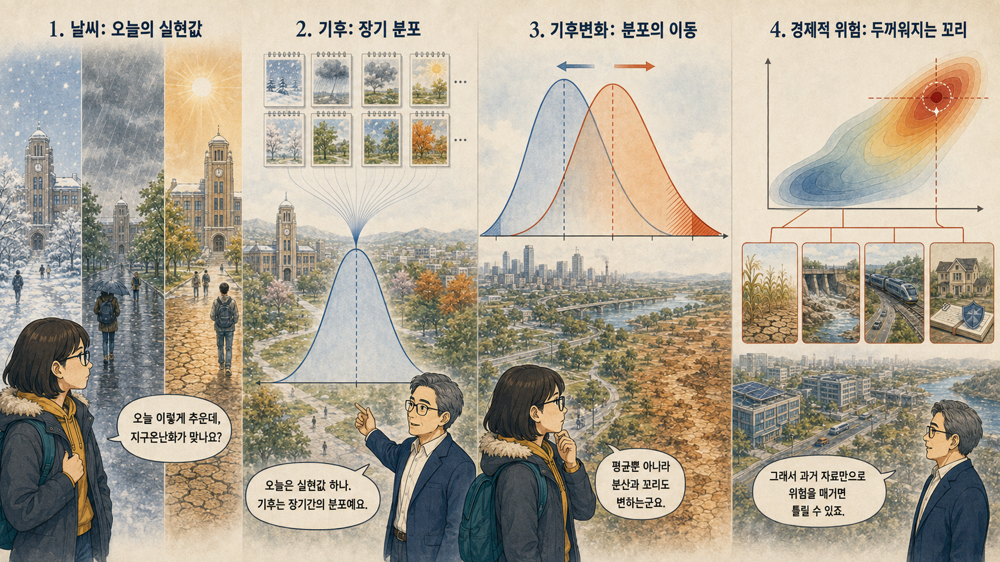
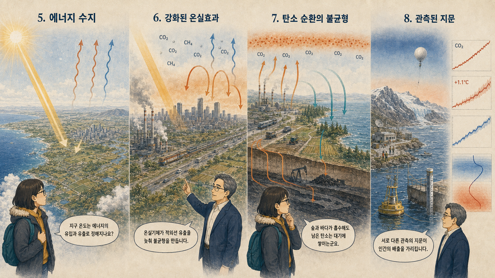
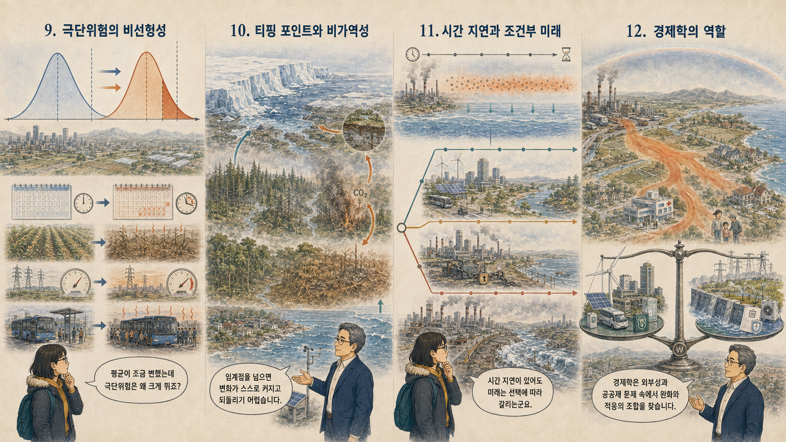
생각해 볼 문제
- “올여름 서울의 최고기온이 평년보다 낮았다”는 사실은 지구온난화에 대한 반증이 될 수 있는가? 날씨와 기후, 실현값과 분포의 개념을 사용해 설명하라.
- 평균기온이 같은 두 지역에서 한 지역은 고온과 가뭄의 공분산이 높고 다른 지역은 낮다. 어느 지역의 농가가 작물보험에 더 높은 보험료를 내야 하는가? 그 이유는?
- 대기오염 규제로 에어로졸 배출이 줄면 단기적으로 기온에는 어떤 영향이 있을 수 있는가? 이것이 대기오염 규제를 반대할 이유가 되는가?
- NGFS의 ‘온실 세계’ 시나리오에서는 전환위험이 낮다. 그렇다면 금융기관에 이 시나리오는 좋은 소식인가? 물리적위험과 함께 논의하라.
- 시간 지연과 비가역성이 함께 존재할 때, “기후변화의 피해가 확실해질 때까지 기다렸다가 대응하자”는 전략의 문제점은 무엇인가?
온라인 데이터 및 시각화 자료
| 자료 | 운영 기관 | 주요 내용 |
|---|---|---|
| Climate Brink Dashboard | Andrew Dessler (Texas A&M) | 기온·해빙·해수면·CO₂ 등 핵심 지표 대화형 시각화 |
| Copernicus Climate Pulse | C3S / ECMWF (EU) | ERA5 기반 준실시간 기후 모니터링 (일·월·연별) |
| IPCC AR6 | IPCC | 제6차 평가보고서 원문 |
| NGFS Scenarios | NGFS | 중앙은행·감독기관을 위한 기후 시나리오 |
| EM-DAT | CRED/UC Louvain | 국제 재해 데이터베이스 |
| Our World in Data - CO₂ | Our World in Data | 국가별 CO₂ 배출 추세 |
| Global Carbon Budget | Global Carbon Project | 연간 탄소 수지 업데이트 |
| NASA: Global Warming | NASA Earth Observatory | 현재 온난화가 자연적 변동과 어떻게 다른지 심층 해설 |
| XKCD: Earth’s Temperature Timeline | XKCD | 최근 약 2만 년의 기온을 설명하는 만화 |
추천 영상
- A Friendly Guide to Climate Change - and What You Can Do to Help (YouTube): 기후변화의 원인과 결과, 그리고 개인이 할 수 있는 일을 쉽게 정리한 애니메이션 강의.
- [PD수첩] 코드레드: 기후의 청구서 (YouTube): 기후위기가 초래하는 실제 경제적·사회적 비용을 다룬 MBC PD수첩 다큐멘터리.
- 박상욱의 기후 1.5: 히말라야 빙하 붕괴, 기후변화 탓인가 (JTBC, 2026.8.31): 단일 사건의 직접적 방아쇠와 배후의 구조적 조건을 구분해야 한다는 이 장의 논점을 보여주는 사례.